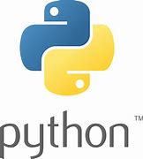

تُعدّ لغة بايثون أحد لغات البرمجة عالية المستوى كائنية التوجّه التي تمتاز
بسهولة فهم وكتابة جملها، وهي تفاعليّة مفسرة حيث يتم ترجمة جملها وتحويلها
إلى لغة الآلة التي يفهمها الحاسوب في أثناء تنفيذ البرنامج، فضلًا عن أن
أنواع متغيّراتها وقيمها يتم تحديدها بشكل ديناميكي خلال تنفيذ البرنامج،
وبايثون أسهل بكثير من لغات البرمجة الأخرى حيث تتيح للمستخدم إنشاء برامج
جميلة بمجهود قليل وبسهولة أكبر، وهي لغة متعددة الأغراض يمكن استخدامها على
أية نظام تشغيل حديث، حيث تستخدم لأغراض معالجة النصوص والأرقام والصور
والبيانات العلمية وأي شيء يمكن حفظه على جهاز الحاسوب، ومن الأمثلة على
تطبيقات تستخدم البايثون؛ محرك البحث جوجل واليوتيوب وناسا وبورصة نيويورك
وغيرها الكثير من مواقع الأعمال والحكومة والمؤسسات غير الربحية.
Get start
استخدامات لغة بايثون
تمتاز لغة بايثون بسهولتها حيث يوجد لها مجتمع كبير من المستخدمين والعديد من
الكتب التي تساعد المطورّين في عملهم، كما تُمكّن مستخدميها من تطوير جميع
أنواع التطبيقات بدءًا من التنبؤ التحليلي وانتهاءً بواجهات المستخدم، ومن
أبرز المهام التي يمكن تنفيذها باستخدام بايثون:
- إنشاء تطبيقات الويب باستخدام أنظمة البايثون مثل Django و Flask.
- إنشاء مخططات لسير العمل للبرامج التي يتم العمل عليها.
- تحديث البيانات والملفات المخزّنة في قواعد البيانات.
- إتاحة القراءة والكتابة إلى MySQL و PostgreSQL.
- التعامل مع الحسابات المعقّدة والعلمية والتحليليّة بسهولة.
- إنشاء البرامج بسرعة وسهولة.
-
إنشاء خدمة قارئ الأخبار المبسّط جدًا والذي يتيح للمستخدم تصفّح آخر
الأخبار من المواقع المختلفة التي يتابعها.
- إنشاء رزنامة باستخدام لغة HTML.
مميزات لغة بايثون
على الرغم من أن لغة بايثون بطيئة إلا أنّ شهرتها لا تتوقف عن النمو وذلك لما
تمتاز به من إنتاجية أفضل باستخدام كود أقل، الأمر الذي يجعلها من أكثر
اللغات المحببة للمستخدم، وللغة بايثون مجموعة من المميزات التي تجذب وتشجّع
البدء في تعلّمها، ومن هذه المميزات أنها:
- لغة عالية المستوى:
ويُقصد بهذا أنها مُشتقّة من اللغة العادية التي
يستخدمها البشر للتواصل فيما بينهم، الأمر الذي يجعل منها سهلة الفهم
والتعلّم من قبل أي أحد.
- لغة مفسّرة:
حيث يتم تتبع البرنامج المكتوب بلغة بايثون سطرًا بسطر، وعلى
الرغم من أنّ هذه الميّزة تجعل منها أبطئ من باقي لغات البرمجة، إلا أنها
تُسهّل عملية تتبع الأخطاء وتجعلها أكثر كفاءة.
- بنية جملها سهلة:
حيث تَستخدم هذه اللغة الفراغات في بداية الجمل بدلًا من
الأقواس لتسهيل عملية فصل البرنامج وتوزيعه بشكل جيّد منسّق بحيث يسهل فهمه
وقراءته.
- لغة ديناميكية:
لا يحتاج المستخدم إلى كتابة نوع المتغيّرات في البرنامج
حيث يتم تحديدها بشكل تلقائي، الأمر الذي يسرّع من عملية تطوير البرامج
وكتابتها.
- لغة مفتوحة المصدر:
حيث أن هذه اللغة متاحة بشكل مجاني للجميع، ويملك كل من
يستخدمها حرية التعديل على البرنامج ليتناسب مع متطلباته وبدون أية
تداعيات.
- لغة قابلة للنقل والحمل:
حيث أنه يمكن كتابة البرنامج مره واحدة ومن ثمّ
تشغيله على أجهزة مختلفة دون الحاجة إلى عمل أية إضافات أو تغييرات، الأمر
الذي يُعدّ مفيدًا خاصةً في حال العمل ضمن فريق على مشروع مشترك.
- خاصية التضمين:
تُمكّن هذه اللغة مستخدميها من تضمين برنامج مكتوب بلغات
أخرى مثل لغة C أو ++C.
- مدعّمة بالمكتبات الجاهزة:
حيث تُوفّر هذه اللغة المكتبات التي تُمكّن
مستخدميها من البدء والحصول على الحلول الجاهزة لمشكلاتهم بسرعة وبسهولة.
- لغة برمجة كائنية التوجّه:
حيث أنّ المبادئ كائنية التوجّه تساهم في جعل
البرنامج يعكس سيناريوهات العالم الحقيقي وتزودّه بالأمان، الأمر الذي
يساعد على إعداد تطبيقات جيدة الصنع.